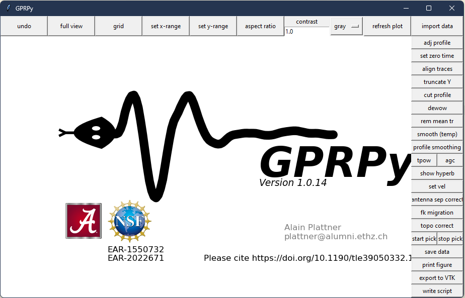

GPRPy: Procesamiento Avanzado de Datos de Radar Terrestre
GPRPy es una librería de Python diseñada para el procesamiento profesional de datos de Ground Penetrating Radar (GPR), ofreciendo herramientas avanzadas para la interpretación geofísica.

¿Qué es GPRPy?
GPRPy es una librería de código abierto desarrollada en Python que permite el procesamiento, análisis y visualización de datos de Ground Penetrating Radar (GPR). Esta herramienta es esencial para geofísicos, arqueólogos e ingenieros que trabajan con estudios del subsuelo.
Características Principales
La librería incluye múltiples funcionalidades:
- Lectura de datos: Compatible con múltiples formatos de equipos GPR comerciales
- Procesamiento de señales: Filtros, correcciones de tiempo cero, y eliminación de ruido
- Visualización: Herramientas de plotting para radargramas y perfiles
- Migración: Algoritmos de migración Kirchhoff para mejorar la imagen
- Velocidad: Análisis de velocidad y conversión tiempo-profundidad
Instalación y Uso
GPRPy se puede instalar fácilmente usando pip:
pip install gprpyUn ejemplo básico de uso:
import gprpy.gprpy as gpr
# Cargar datos GPR
data = gpr.GPRpy("mi_archivo.dt1")
# Procesar datos
data.dewow(window=7)
data.timeZeroCorrect(method='maximum')
data.tpowGain(power=2)
# Visualizar
data.showRadargram()Aplicaciones en Geofísica
GPRPy ha sido utilizado exitosamente en diversos proyectos:
- Estudios arqueológicos para detectar estructuras enterradas
- Inspección de pavimentos y estructuras civiles
- Mapeo de utilidades subterráneas
- Estudios ambientales y de contaminación
- Investigaciones geológicas y hidrogeológicas
Contribución al Código Abierto
GPRPy es un proyecto de código abierto que fomenta la colaboración científica. El desarrollo continuo de esta herramienta permite a la comunidad geofísica acceder a tecnología de punta sin las limitaciones de software propietario.
Enlaces y Recursos
Para más información sobre GPRPy: